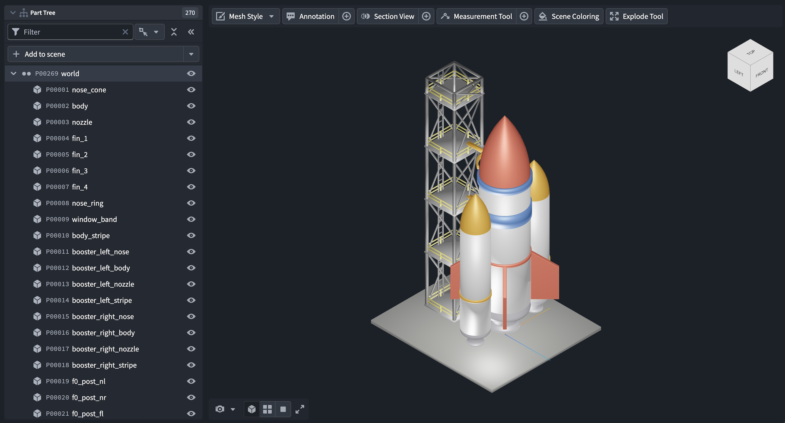

:::callout{theme="neutral" title="Beta"} Vulcan is in the beta phase of development and may not be available on your enrollment. Functionality may change during active development. :::
Vulcan is a 3D rendering application that displays computer-aided design (CAD) models, engineering drawings, and point clouds in the Palantir platform.
With Vulcan, you can:
Annotations, measurements, and section planes saved from Vulcan are Ontology objects, so they can drive other Palantir platform workflows such as alerts and dashboards.

This screenshot uses notional data.
Vulcan renders 3D models that are stored in the Ontology as CAD objects. A CAD object is an Ontology object with a property carrying the cad_media_reference type class, which holds a media reference to a model file.
In the standalone application, select Add to scene, then choose a CAD object. Repeat this process to add more models to the scene.
In the Vulcan widget, the widget configuration determines which models load. See Choose a CAD object.
Vulcan renders three kinds of geometry: mesh models, which approximate the surface of each part with triangles; 2D engineering drawings; and point clouds. You can point a CAD object's media reference property (the property carrying the cad_media_reference type class) at a file in any of the following formats without conversion:
GLB, GLTF, STL, OBJ, PLY, 3MFDXFLAS, LAZ